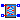
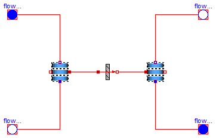

| Name | Description |
|---|---|
| Catalogo de equipos (intercambiadores de placas) con las especificaciones de los fabricantes. | |
| Ejemplos y modelos de verificacion de intercambiadores de calor de placas | |
|  IntercambiadorPlacas | Modelo de intercambiador de placas |

| Type | Name | Default | Description |
|---|---|---|---|
| Integer | n | 1 | |
| Medium | medium_1 | Modelica.Thermal.FluidHeatFl... | |
| Medium | medium_2 | Modelica.Thermal.FluidHeatFl... | |
| Especificaciones | espec | Soltermica.Intercambiadores.... | |
| Temp_K | T_ini | [K] |
| Type | Name | Description |
|---|---|---|
| FlowPort_b | flowPort_b_1 | |
| FlowPort_a | flowPort_a_2 | |
| FlowPort_b | flowPort_b_2 | |
| FlowPort_a | flowPort_a_1 |
model IntercambiadorPlacas "Modelo de intercambiador de placas"
Modelica.Thermal.FluidHeatFlow.Interfaces.FlowPort_b flowPort_b_1(final
medium = medium_1);
Modelica.Thermal.FluidHeatFlow.Interfaces.FlowPort_a flowPort_a_2(final
medium=medium_2);
Modelica.Thermal.FluidHeatFlow.Interfaces.FlowPort_b flowPort_b_2(final
medium=medium_2);
Modelica.Thermal.FluidHeatFlow.Interfaces.FlowPort_a flowPort_a_1(final
medium=medium_1);
Soltermica.ClasesBasicas.VolumenesControl.VolumenesControl1D
volumenesControl1D_1(
final n=n,
final volumen=espec.V_1,
final longitud=espec.L_int,
final dp_nom=espec.dp_nom_1,
final V_flow_nom=espec.V_flow_nom_1,
final medium=medium_1,
T_ini=T_ini);
Soltermica.ClasesBasicas.VolumenesControl.VolumenesControl1D
volumenesControl1D_2(
final n=n,
final volumen=espec.V_2,
final longitud=espec.L_int,
final dp_nom=espec.dp_nom_2,
final V_flow_nom=espec.V_flow_nom_2,
final medium=medium_2,
T_ini=T_ini);
Soltermica.ClasesBasicas.TransferenciaCalor.TransmisionCalor1D
transmisionCalor1D[ n](
each U=espec.U_int,
each A=(espec.S_int/n));
Modelica.SIunits.Power potTotInter;
parameter Integer n=1;
parameter Modelica.Thermal.FluidHeatFlow.Media.Medium medium_1=Modelica.Thermal.FluidHeatFlow.Media.Medium();
parameter Modelica.Thermal.FluidHeatFlow.Media.Medium medium_2=Modelica.Thermal.FluidHeatFlow.Media.Medium();
parameter Soltermica.Intercambiadores.Placas.CatalogoEquipos.Especificaciones
espec = Soltermica.Intercambiadores.Placas.CatalogoEquipos.Especificaciones();
parameter Modelica.SIunits.Temp_K T_ini;
equation
//Definición de la potencia total intercambiada
potTotInter=sum(transmisionCalor1D[i].port_a.Q_flow for i in 1:n);
connect(flowPort_a_1, volumenesControl1D_1.flowPort_b);
connect(flowPort_b_1, volumenesControl1D_1.flowPort_a);
connect(flowPort_a_2, volumenesControl1D_2.flowPort_a);
connect(volumenesControl1D_2.flowPort_b, flowPort_b_2);
connect(volumenesControl1D_1.puertoInt, transmisionCalor1D.port_a);
connect(transmisionCalor1D.port_b, volumenesControl1D_2.puertoInt);
end IntercambiadorPlacas;